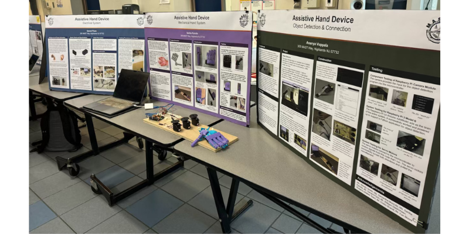

Assistive Hand Device

Due to lost files, information regarding this project is currently unavailable. Please check back later for updates.

Due to lost files, information regarding this project is currently unavailable. Please check back later for updates.
